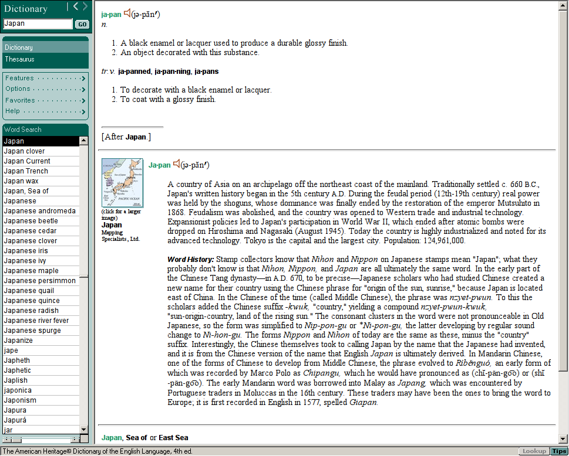

又一个字典软件，我的！
去年开始用业余时间断断续续的开发了一款Android下的字典软件，过程中有些有意思的地方，在这里记一下。
1 我想要American Heritage Dictionary
先给大家推荐一下这本字典，叫 《American Heritage Dictionary》，我最早了 解这个字典并对其产生兴趣是在 XahLee的字典评价网页上 。在线版可以上 education.yahoo.com 。
这本字典最大的特色是它的作者们花了很大的功夫去追寻每个单词的根源。比如 Japan（日本）这个单词的解释里有这样一段：
WORD HISTORY:
Stamp collectors know that Nihon and Nippon on Japanese stamps mean "Japan"; what they probably don't know is that Nihon, Nippon, and Japan are all ultimately the same word. In the early part of the Chinese Tang dynastyin a.d. 670, to be preciseJapanese scholars who had studied Chinese created a new name for their country using the Chinese phrase for "origin of the sun, sunrise," because Japan is located east of China. In the Chinese of the time (called Middle Chinese), the phrase was nzyet-pwun. To this the scholars added the Chinese suffix -kwuk, "country," yielding a compound nzyet-pwun-kwuk, "sun-origin-country, land of the rising sun." The consonant clusters in the word were not pronounceable in Old Japanese, so the form was simplified to Nip-pon-gu or *Ni-pon-gu, the latter developing by regular sound change to Ni-hon-gu. The forms Nippon and Nihon of today are the same as these, minus the "country" suffix. Interestingly, the Chinese themselves took to calling Japan by the name that the Japanese had invented, and it is from the Chinese version of the name that English Japan is ultimately derived. In Mandarin Chinese, one of the forms of Chinese to develop from Middle Chinese, the phrase evolved to Rìbnguó, an early form of which was recorded by Marco Polo as Chipangu, which he would have pronounced as (ch-pän-goo) or (sh-pän-goo). The early Mandarin word was borrowed into Malay as Japang, which was encountered by Portuguese traders in Moluccas in the 16th century. These traders may have been the ones to bring the word to Europe; it is first recorded in English in 1577, spelled Giapan.
原来Japan是日本的音译！就像John被音译成约翰，Johnny却被译成强尼一样； Japan如果再音译回中文的，应该译成亚本，而不是甲本吧。当然这是没必要的， 因为Japan本身是从中文音译过去的！
另外了解到日本为什么叫日本了，原来是唐朝时期的遣唐使们认为自己的国家是 在大唐的太阳升起的方向，origin（本源） of the sun （日），所以就叫日本。
真的是太有意思了:-)
另外，日本人自己日字的发音是尼，这跟我的老家浙江东阳方言有点像，我们管 日头叫聂（第2声）豆。很多南方的方言都比较古老，比较适合用来读古诗，就是 这个道理:-)
2 我弄到了American Heritage Dictionary的数据
先声明一下，下面的做法是触犯知识产权保护法的，所以只供大家研究学习之用， 千万别拿它做坏事！
另外，网上其实能找到未加密的AHD的字典数据，是Stardict这个开源Linux字典 项目的格式，直接能用的。现在找起来有点费劲了，Stardict这个项目基本已经 不维护了，并且其众多字典数据全是侵权的，纷纷被拿下了。并且AHD数据有点不 全，Stardict本身用这个数据库的时候也有一些bug。
所以我找来了AHD的安装光盘，这是一个Windows软件，并且其数据是加密的，怎 么才能把它给挖出来呢？
请系好安全带！
在Linux下有个Windows模拟器叫Wine，估计大家都知道。用Wine可以把AHD给装上 并且跑起来。

很快发现这个软件会在其安装目录下泄露数据：每个查过的单词的解释会被循环 保存到10来个临时html文件中！这下思路就很清晰了，把所有单词都查一遍，每 查一个就把相应的html文件给拷出来！
可是有9万多个单词呢，你手工一个一个拷不成？
当然不是。
从第一个单词开始，不停的按Down键，就会不停地查下一个单词。所以如果在 Windows上的话，用AutoHotKey可以很容易地做到这点。可是每按一个下键我们就 需要找到并保存最新的那个临时文件呢。
幸好我们是在Linux下，这一切都可以用脚本来做。可以提供AutoHotKey的功能的 软件不是别的，就是我的窗口管理器：Sawfish。
比如我媳妇儿刚给我买的Macbook Air，上面Insert键需要用Fn + Delete来按，
我在Terminal下粘贴习惯用Shift-Insert，这下必须按3个键了：
Shift-Fn-Delete。我在我的 ~/.sawfishrc 里加这么一条就可以继续只按两个
键（Win + 回车）来粘贴：
(bind-keys global-keymap "Super-RET" (lambda () (synthesize-event "S-Insert" (input-focus))))
总之，最后用来挖字典数据的脚本是这样的（注释版）：
#!/usr/bin/env perl use strict; # 给自己一点时间把AHD程序启动起来，一个长时间（1000秒）的sleep保证够用 # 并且可以kill掉，再来一个短的sleep以保证用终端kill掉长的之后有时间切回 # AHD system("sleep 1000; sleep 5;"); # 这段是一个字符串，是给sawfish程序执行的lisp代码。其主要作用就是找到 # AHD的窗口并给它发向下方向键。 my $down_sawfish_cmd = <<EOF; (mapcar (lambda (w) (if (string-match "^the american heritage" (window-name w) 0 t) (synthesize-event "Down" w) "world")) (window-order)) EOF sub debug(@) { print STDERR "@_\n"; } # 一个死循环，最后要手动停止它 while (1) { my %old_ts = (); # 记下html文件的时间戳 for (glob("~/.wine/drive_c/AHD4withThesaurus/outfile*.htm")) { $old_ts{$_} = qx(stat -c %Y $_); } # 发一个Down键，查下一个单词（应该会有一个html文件被更新） system("sawfish-client", "-e", $down_sawfish_cmd); my $done_copying = 0; my $try = 0; while (1) { my %new_ts = (); # 重记时间戳 for (glob("~/.wine/drive_c/AHD4withThesaurus/outfile*.htm")) { $new_ts{$_} = qx(stat -c %Y $_); } for (keys %new_ts) { # 时间戳不等 if ($new_ts{$_} ne $old_ts{$_} and # 并且文件已经写全 system("grep", "-q", "Published by Houghton Mifflin Company", $_) == 0) { # 记录md5以对比文件是否已经拷过，一直重复拷的话就需要人工干预了 chomp(my $md5sum = qx(md5sum $_)); $md5sum = substr $md5sum, 0, 32; my $subdir = substr($md5sum, 0, 2); my $filename = substr($md5sum, 2); system("mkdir -p ~/external/ahd/$subdir"); -e glob("~/external/ahd/$subdir/$filename.htm") and debug("$_ has changed, and md5 file already there."); system("cp $_ ~/external/ahd/$subdir/$filename.htm"); $done_copying = 1; } } if ($done_copying == 0 and $try++ < 5) { system("sleep .5"); } else { last; } } }
最后，把所有数据都挖出来大概需要10个小时，中间需要人工干预两三次。
把数据挖出来之后对数据清理也花了很大的精力，其次就是它某些单词附带的图 片也需要挖出来（这个在Stardict的AHD包中大部分都有了）。
3 开始写CrossDict程序
4 CrossDict的字典数据
不用担心，它不是违法的AHD的数据，因为我后来又挖来了开源的GCIDE的字典数 据。那又是另一个故事了。
现在CrossDict终于发布了，您可以到 Google Play 上安装它。
而这段有趣的旅程也终于结束了，感觉真好！
最后，如果您觉得我干得漂亮，想鼓励我一下，请 Donate 。